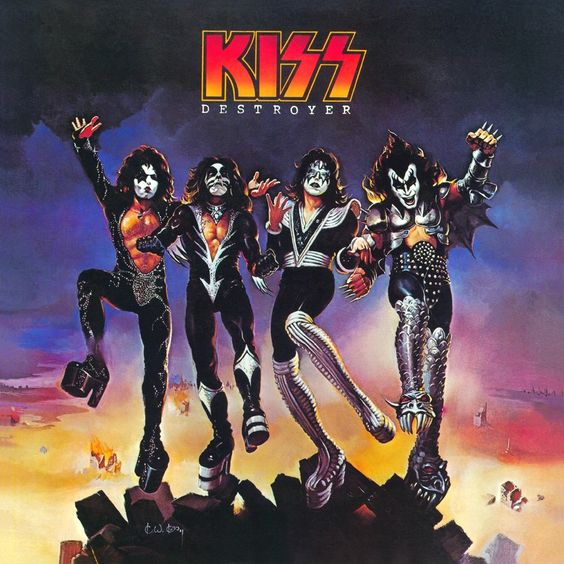

Kiss (ou KISS) é uma banda de Hard Rock/Heavy Metal dos stados Unidos da América, formada em Nova York em 1973. Conhecida mundialmente por suas maquiagens, e por seus concertos muito elaborados e até exagerados que incluem guitarras esfumaçantes, cuspir fogo e sangue, pirotecnias e muito mais. As vendas da banda excedem os 100 milhões no mundo inteiro.Constitui um dos maiores impactos culturais da década de 1970, valendo-se de roupas, e sobretudo, maquiagens nunca antes vistos, e que marcariam a história da música. Seus dois fundadores são Gene Simmons (Baixo e Vocal) e Paul Stanley (Guitarra Rítmica e Vocal), que ficaram frustrados com o fim de uma banda que formaram, chamada Wicked Lester, assim, decidindo procurar novos integrantes para uma nova banda, encontraram tais integrantes através de anúncio de jornal, Ace Frehley (Guitarra Solo e Vocal) e, pela revista Rolling Stone, Peter Criss (Bateria e Vocal).Depois do fim do grupo Wicked Lester, Paul Stanley e Gene Simmons decidiramm criar uma nova banda para ser um super grupo e para isso colocaram anúncios e em jornais e revistas para achar novos músicos. A um destes anúncios respondeu o baterista Peter Criss para fazer o teste como o rapaz estava bem vestido, e pergunta: "Se num show a gente lhe pedir para ir fantasiado de mulher, você vai?", com uma resposta afirmativa ele entra na banda. E precisavam de mais um integrante e para a banda. no dia do teste aparece um rapaz que chega cortando fila, e vestido de forma estranha, com um tênis de cada cor, calça rasgada. Gene até achou que era um mendigo não fosse ele estar segurando uma guitarra. E o alertaram que ele não podia cortar fila e ele se dirigiu ao final da fila, mas quando chegou a sua vez, ele impressionou a todos e assegurou um lugar na banda seu nome era Ace Frehley.Faltava um nome, escolheram o nome inspirado num concurso de Nova Iorque, Kiss. E se inspiraram na banda New York Dolls e no rock-horror show de Alice Cooper para definir a atitude e figurino da banda. A maquiagem foi definida se baseando em elementos referentes a verdadeira personalidade de cada um. Gene Simmons adora filme de terror e assumiu uma maquiagem que o deixaria com cara de mal. Paul pintou uma estrela em seu olho direito pois sonhava em ser um astro do rock. Ace concebeu sua maquiagem baseada no espaço sideral e numa estética futurista por ser uma pessoa "aérea" e dispersa. Por adorar felinos, Peter adotou uma imagem de homem-gato, acredita ainda que tenha sido um gato em outras encarnações.Eles assumiram essa personalidade como sendo essencial para o sucesso do grupo, escondendo assim por anos a fio a verdadeira identidade de seus músicos. Para definir o figurino da banda, mesclaram elementos de super-heróis em quadrinhos com personagens do teatro japonês. Usando botas com saltos enormes que davam um ar de super heróis titânicos ao grupo e se tornariam então: "The Starchild" (Paul Stanley), "The Demon" (Gene Simmons), "Space Man" (Ace Frehley) e "The Catman" (Peter Criss).
Formação Atual
EX-Integrantes